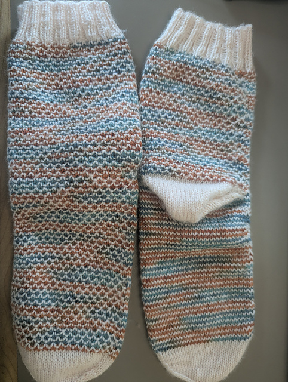

Prior to starting my MLIS, I spent seven years working in healthcare IT. Before that, I was a double major in math and philosophy, a combination that makes more sense than you might expect-- I'm a big fan of formal logic and thinking too hard about the nature of numbers.
Outside of school and work, I'm a huge fan of crossword puzzles-- Check out my LibGuide on the subject! I also love trivia, and I find the two hobbies feed into each other frequently. Find me on J-Archive here, or check out LearnedLeague and let me know if you'd like a referral.
I'm an avid knitter and crocheter, and you can keep up with the projects I remember to track on Ravlery.
